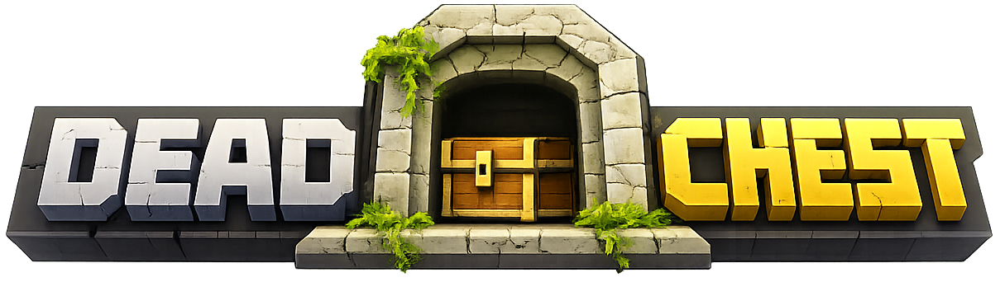
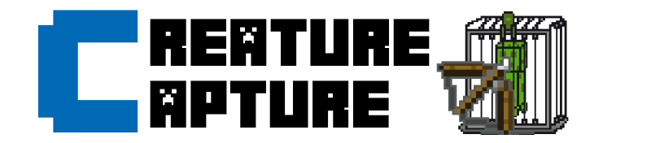
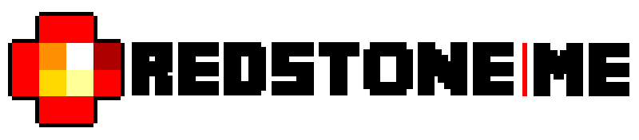

Deadchest
A modern death chest plugin for Bukkit, Spigot, and Paper. It is the most visible repository in the organization.
Stellionix has been building Minecraft plugins for more than 10 years, used by server owners and downloaded millions of times across the community.
Each plugin card now includes direct links to its download page, source repository, and official documentation when a dedicated public doc site exists.

A modern death chest plugin for Bukkit, Spigot, and Paper. It is the most visible repository in the organization.
Spawner management and Silk Touch pickup for servers that want finer control over progression.
Administration tools for entities and spawn behavior on Minecraft servers.

A creature capture system designed to extend collection mechanics and server-side gameplay.

Triggers redstone through player presence, without buttons, levers, or pressure plates.
A football plugin for Minecraft built around a block-based ball system.